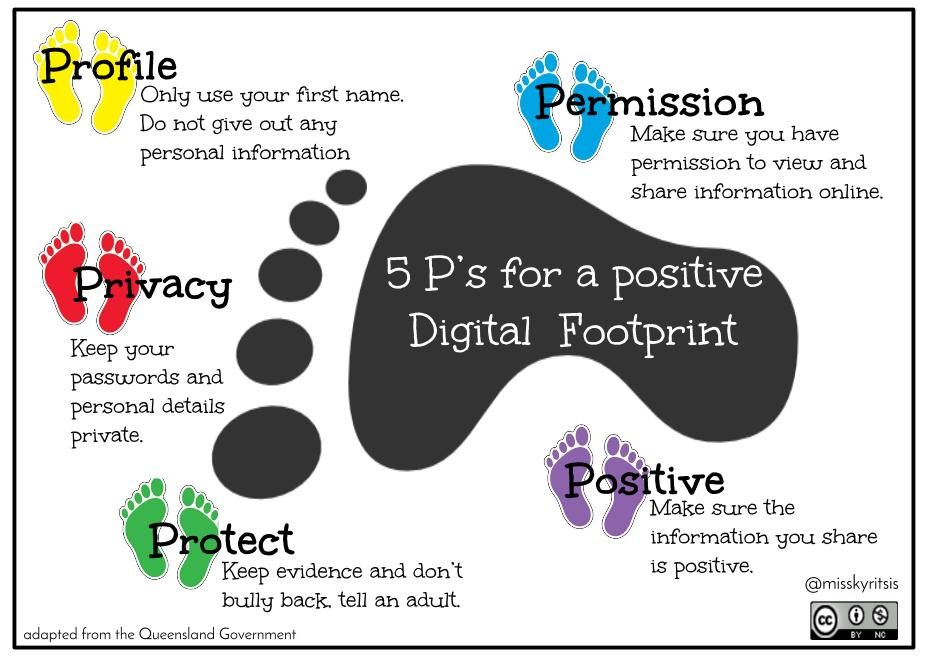

Introduction
The rapid advancement of the digital economy has led to the emergence of an extensive array of new and innovative technological methodologies to assist with personnel selection decisions (McCarthy et al., 2017; Nikolaou, 2014).
Your digital footprint.
Named from a Latin term translated to “Fame via reputation”. Fama Technologies uses artificial intelligence to help weed out problematic employees before they are even hired by an organization. According to Fama.io website, the tech company claims that the algorithm powered software smartly screen out problematic workplace behavior in potential employees and helps ease the work for tradition human resources departments. The software basically sniffs through a potential employee’s digital footprint, especially publicly available data like social media.
“Fama provides an automated solution that identifies problematic behavior among potential hires and current employees by analysing publicly available online information. Enterprise HR and Talent leaders trust Fama to help identify behaviors such as bigotry and harassment that are often missed in the hiring process. With Fama, organizations can now improve workplace culture and protect their employees from harassment and toxic behaviors before they escalate to more serious concerns and expose the brand to liability.” From http://www.fama.io
Notwithstanding the fact that every organization should prioritize and cultivate a comfortable and safe working environment for all their employees, what is the ultimate cost that a company pays for such an activity? More so, what is the cost for the potential employee. There are serious implications to privacy at play here. Investing in algorithm powered AI ttargets people based on their digital footprint, not on their humanity.
Scholarly debates.

As much as Technologies like Fama help cast the net wider that where a human being could possibly reach, there are still limitation. Scholars like Le Corff, Gingras, and Busque‐Carrier (2017) argue that methodological limitations of equivalence studies may bias results.
The argument.
I believe measuring a human being using yesterday’s yardsticks is retrogressive. People evolve, people are dynamic creations. My statements in Facebook five years ago do not and must not be a mirror image of what I ma, or might say today.
While this would seem like a simple and desirable solution at first you must wonder what the AI’s guild lines are based off. What are the traits that they are looking for that give employees the red light? We hope that the algorithms and designs used by Fama are unbiased and in the right way for finding undesirable employees. Hopefully, employees with a red light do have an opportunity to redeem or explain themselves from what they might done or posted in their past online and not be able to ever apply again.
Digital footprints
F"ama analyzes a candidate or current employee’s digital footprint through their publicly available online data, with the goal of identifying any potential risks posed to the organization, which could include bigotry, sexism, and harassment." (Onesto 2020)
According to CareerBuilder, 60% of organizations are using public social media or online searching to screen job applicants in 2016. However, most of those companies do it manually.” Some companies wish to remove the liability from their Human Resources (HR) department by using Fama instead of asking the HR employees to perform manual Social Media background checks.
Bibliography
Onesto, L. Hireright Introduces Social Media Screening Through Partnership With Fama Technologies. [online] Businesswire.com. Available at: https://www.businesswire.com/news/home/20200331005095/en/HireRight-Introduces-Social-Media-Screening-Partnership-Fama [Accessed 14 June 2021].
DeMuro, R., 2020. Companies Are Using Artificial Intelligence To Screen For Problematic Employees. [online] KTLA5. Available at: https://ktla.com/morning-news/technology/fama-social-media-screening-machine-learning-job-applicant-risk/ [Accessed 14 June 2021].
Nikolaou, I., 2021. What is the Role of Technology in Recruitment and Selection?. The Spanish Journal of Psychology, 24.